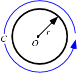

The standard form of the equation of a circle is (x-h)^2 + (y-k)^2 = L
where L = r^2 and the center of the circle is at (h,k).
The standard form of the equation of the circle has three conditions, qualified by L
If L>0 the graph is a circle with the center at (x_0,y_0) and the radius r
If L=0 the solution is x=x_0,y=y_0 and the graph is a single point.
If L<0 The equation has no solution, therefore there is no graph

A circle is the set of points in a plane that are equidistant from a given point O.
The distance r from the center is called the radius, and the point O is called the center.
Twice the radius is known as the diameter d=2r.
The angle a circle subtends from its center is a full angle, equal to 360 degrees or 2pi radians.
A circle has the maximum possible area for a given perimeter, and the minimum possible perimeter for a given area.
The perimeter C of a circle is called the circumference, and is given by
C=\pi d=2 \pi r. (1)
This can be computed using calculus using the formula for arc length in polar coordinates,
C = {\int_0^{2 \pi} \sqrt{ r^2 + ({dr \over d \theta })^2 }} d \theta
\sqrt {r^2+ { dr \over d \theta } ^2 } d \theta (2)
but since r(theta)==r, this becomes simply
C==int_0^(2pi)rdtheta==2pir.